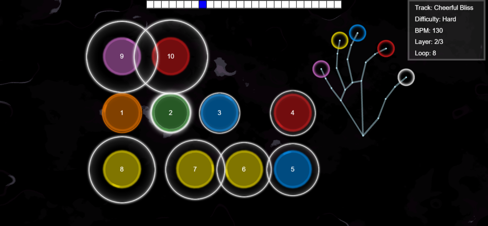

Overview
A collection of small university assignments and projects covering topics such as real-time rendering, image processing, GPU programming, and volume visualization.
Included Projects
Pizzicato
A rhythm serious-game using Mediapipe hand tracking. Originally made with a group of 3 other students in collaboration with psychology researchers from Leiden University. And it has gone on to be used for further research and has at this stage entered the clinical trails stage, for possible use in rehabilitating patients that have lost motor control in their hands.
Holonomy
A VR project about having a player move in a hyperbolic tile-grid, which has the intresting property of alowing players to traverse anfinite space in the game world while physically staying in the same small area in the real world by making use of the inherent properties of this curved space.
It originally started out as a practical school project made in the second year of my bachelor with 3 other students. I ended up getting hired by my proffesor to continue working on the project on periodically for around 2 years (with other students coming and going over that period). I mostly worked on the underlying logic of the tile grid and its interactions (such as shortest path algorithms), as well as helping the others with various other aspects of the game such as the portal systems (which make use of stencil buffers).

Volume Visualization in C++
With two other students we implemented the features of a basic volume visualization tool with ambient occlusion, curvature volumes and multiple composition modes. I later expanded on this with extra transfer functions and an interactive experience explaining a method proposed by this paper: TODO add paper link Later on I got hired by the University to further improve their coding enviroment with GPU volume rendering and its various ways of speeding this up (volume bricking, empty space skipping, ect). This version later got used as the project template for the assignments of a newly created course on data visualiztion. TODO add picture
3D Game Engine (OpenGL)
With one other partner we build a simple C++/OpenGL game engine. Which included stuff a bunch of shaders and post processing effects. Dynamic cubemaps, lighting and physics. And a bunch of optimization features such as frustrum culling and and instancing


Image Processing
Multiple projects: painterly stylization, depth-from-scribbles, style transfer using PyTorch. TODO: expand, add images